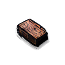

| Old Brick Material 21272 |
|
 |
|
| IR.110 | |
| Stats | |
| Weight | 0 |
| Info | |
| Miscellaneous Crafting Material: Bricks that are widely used in Acre Selund. Old ones were made using a unique method and are particularly strong. | |
| Bazaar | G |
| Yes | 500 |
| Gathering |
| Urteca Mountains: Ancestral Territory |
| Urteca Mountains: Cave of Suffering |
| Urteca Mountains: Construction Material Depot |
| Urteca Mountains: Pool of Inextinguishable Flames |
| Urteca Mountains: Primordial settlement |
| Urteca Mountains: Pyre Saurian Colony |
| Urteca Mountains: Silent Resistance Battle Site |
| Urteca Mountains: Skygazing Spot |